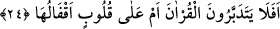
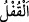

mübarek başı ucunda oturdum. Bazı insanların o yüce huzurda birçok yönden edepsizlik
yaptıklarını gördüm. Üzüntümden beni şiddetli bir ağlama tuttu. Birden kulağıma
“Onlar, Allah’ın lânetleyip sağır yaptığı ve gözlerini kör ettiği kimselerdir” âyetinin
okunduğunu duydum. Yâni böyle bir makamda edepsizlik edenler, değerli edep ehlinin
derecelerinden mahrumdurlar.
Mesnevi’de şöyle denilmektedir.
Allah’tan edep konusunda başarılı olmayı dileyelim.
Edepsiz Allah’ın lütfundan mahrûm kalmıştır.
Edepsiz yalnızca kendisine kötülük etmiş olmaz,
Belki dört bir yanı ateşe vermiş olur.
Kim dost yolunda korkusuzluk gösterirse,
Erlerin yol kesicisi olur ki o nâmerttir.
24. Kur’ân’ı(n anlamını) düşünmüyorlar mı? Yoksa kalbler(inin) üzerinde
kilitleri mi var (ki hiçbir hakikat, gönüllerine girmiyor)?
“Kur’ân’ı(n anlamını)” ve ondaki öğüt, nasihat ve uyarıları dikkate alıp
“düşünmüyorlar mı?” ki böyle helâk edici mâsiyetlere düşmesinler. “Yoksa
kalbler(inin) üzerinde kilitleri mi var (ki hiçbir hakikat” öğüt, nasihat ve mesaj
gönüllerine girmiyor)?”
Belki o kilitler onların kalplerindedir, yâni bir şey ki kalplerde kilit yerindedir, işte o
orada ilahî bir mühürdür. Şâirin dediği gibi:
Allah’ın kullarının yüzüne kapadığı kapıyı,
Hiçbir anahtarın açması mümkün değildir.
Onun kalp kapılarına vurduğu kilidi,
Kim kaldırıp açabilir.”
Tedebbür, işlerin ard ve akıbetlerini düşünmek demektir. Yâni Kur’ân’ı düşünüp onu
incelemezler mi ki, onda olan öğüt nasihat mesaj ve kötülükleri engelleyici hususları
düşünsünler de helâk edici isyâna düşmesinler.
(akfal)  kelimesinin çoğulu olup bu, Kamus’ta beyân edildiği üzere
kendisiyle kapıların kapatıldığı kilitlerdir.
İrşâd’da şöyle denmiştir: (em) kelimesi munkatıa olup ihtivâ ettiği (bel) mânâsı
ise “düşünmeme sitemi”nden “kalplerinin düşünmeyi kabul etmeyecek şekilde
kilitlenmiş olduğu sitemi”ne intikal içindir. Hemze ise takrîr içindir.